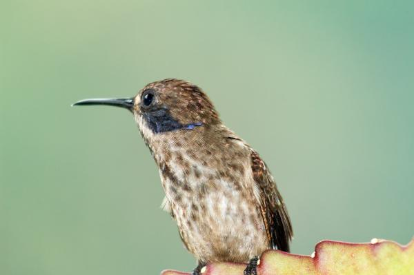

El colibrí pardo, Colibri delphinae, anida en los bosques cuya altura media se halla entre
400 y 1600 metros sobre el nivel del mar. Aunque para alimentarse desciende de esta altura. Habita
en zonas de Guatemala, Brasil, Bolivia y en las Islas Trinidad. Esta especie es muy agresiva contra
otros colibríes.